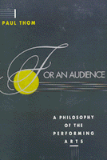

<body bgcolor="#FFFFFF" text="#000000" link="#0000FF" vlink="#CC0000" alink="#CC0000"><center><hr width="350" size="1" align="center" noshade>A philosopher offers a way to evaluate performance art<hr width="350" size="1" align="center" noshade><p><a href="https://cdcshoppingcart.uchicago.edu/Cart/ChicagoBook.aspx?ISBN=9780877229919&&PRESS=temple" target="_top">Buy this book!</a> | <a href="https://cdcshoppingcart.uchicago.edu/Cart/Cart.aspx?PRESS=temple" target="_top">View Cart</a> | <a href="https://cdcshoppingcart.uchicago.edu/Cart/Cart.aspx?PRESS=temple" target="_top">Check Out</a></p><p></p></center><!--none//--><h1>For an Audience</h1>
<h3>Paul Thom</h3>
<P>cloth 0-87722-991-0 $59.95, Nov 92, <FONT COLOR=#990033>Out of Stock Unavailable</FONT>
<BR> 256 pp
6x9
</P><BLOCKQUOTE><I>"Thom succeeds in laying the foundations for a philosophy of the performing arts in the analytic tradition."</I>
<br>&#151<b>Laurent Stern</b>, Rutgers University<I></I></BLOCKQUOTE>
<p>This is an examination of the criteria for identifying, evaluating, and appreciating art forms that require performance for their full realization. Unlike his contemporaries, Paul Thom concentrates on an analytical approach to evaluating music, drama, and dance.
<p>Separating performance art into its various elements enables Thom to study its nature and determine essential features and their relationships. Throughout the book, he debates traditional thought in numerous areas of the performing arts. He argues, for example, against the invisibility of the performer&#151"the vehicle of representation in performance"&#151then critiques Diderot's Paradox of Performance, calling it "the most extreme formulation of the traditional valorization," and declaring that such thinking must be abandoned.
<p>Developing several lines of reasoning regarding music, Thom considers questions of incompleteness and authenticity in relation to the score, the score's function, and the sense in which musical performances are interpreted, or are open to interpretation. It is this audience interpretation that is the final ingredient in the blending and interrelating of the performers, the performance, and the audience. Thom discusses the impact of music, drama, and dance performances on audiences, and evaluates their expectations, reception, and interpretations. He contends that audiences play an active role as interpreters, without becoming performers themselves.
<BR>&nbsp;<h2>Contents</h2><P>
<p>Preface
<br>Introduction
<br><I>Performing/Nonperforming Arts &#149
Artistic/Nonartistic Performance &#149
The Tradition of Philosophizing about the Performing Arts &#149
The Traditional Valorization of the Performing Arts &#149
The Traditional Structure &#149
Philosophical Problems and Theories</I>
<p><b>Part I: Performing a Work</b>
<p>1. Works for Performance
<br><I>The Absent Author &#149
The Marginalization of Staging &#149
Works of Art &#149
Works for Performance &#149
Works for Playing</I>
<p>2. Performance without Works
<br><I>Improvisation &#149
Routines &#149
The End of the Work</I>
<p>3. The Value of the Work
<br><I>The Incompleteness of Works for Performance &#149
Authenticity in Performance &#149
Interpretation &#149
Interpretation of Works for Performance &#149
The Traditional Valorization of Performative Interpretation &#149
The Consummate Performer &#149
Radical Interpretation</I>
<p><b>Part II: Performance as Representation</b>
<p>4. Representation
<br><I>Kinds of Representation &#149
Representation in the Performing Arts</I>
<p>5. Performance without Representation
<p>6. The Value of Representation
<br><I>The Metaphysics of Mimesis &#149
Diderot's Paradox &#149
The Materials of Representation</I>
<p><b>Part III: Beholding a Performance</b>
<p>7. Performances
<br><I>Performing &#149
Performance Institutions &#149
The Scrivener's Contract &#149
Projection &#149
Presence &#149
Performances &#149
The Constitutive Audience</I>
<p>8. Beholding without Performance
<br><I>The End of Performance</I>
<p>9. The Value of Performance
<br><I>The Incompleteness of Performances &#149
The Empty Hall &#149
Reading the Performance &#149
Audience Response &#149
Audience Interpretation &#149
The Traditional Valorization of Audience Interpretation &#149
The Consummate Spectator &#149
Radical Interpretation &#149
Conclusions</I>
<p>Bibliography
<br>Notes
<br>Index
</P><BR>&nbsp;<H2>About the Author(s)</H2>
<P><b>Paul Thom</b> is head of the Philosophy Department, The Faculties, Australian National University.</P>
<BR><H2>Subject Categories</H2>
<p><A HREF="/tempress/philosophy.html" TARGET="_top">Philosophy and Ethics</a>
</p>
<BR><h2 class="inpageheading">In the series</H2>
<P><I><a href="http://www.temple.edu/tempress/arts_philo.html" onMouseOver="window.status='Click for other books in this series!'; return true;" onMouseOut="window.status=''; return true;" target="_top">The Arts and Their Philosophies</a></i>, edited by Joseph Margolis.
</p><p>The volumes in <i>The Arts and Their Philosophies</i>, edited by Joseph Margolis, include: overviews of such well-defined sub-disciplines as the philosophy of music, film, and literature; studies of important figures, schools, and movements; monographs on such topics as postmodernism, texts and interpretation, reference in fiction, and the methodology of art history; explorations of the intersection of the arts and other disciplines, such as feminism and interpretation, art and politics; and translations of major works.</p>
<p align="center"><a href="https://cdcshoppingcart.uchicago.edu/Cart/ChicagoBook.aspx?ISBN=9780877229919&&PRESS=temple" target="_top">Buy this book!</a> | <a href="https://cdcshoppingcart.uchicago.edu/Cart/Cart.aspx?PRESS=temple" target="_top">View Cart</a> | <a href="https://cdcshoppingcart.uchicago.edu/Cart/Cart.aspx?PRESS=temple" target="_top">Check Out</a></p><p><font face="Arial" size="1"><a href="copyright.html" onMouseOver="window.status='Web Copyright Policy';return true;" onMouseOut="window.status=''" title="Web Copyright Policy">&copy;</a> 2015 <a href="http://www.temple.edu" target="new" onMouseOver="window.status='Link to Temple University home page';return true;" onMouseOut="window.status=''" title="Link to Temple University home page">Temple University</a>. All Rights Reserved. http://www.temple.edu/tempress/titles/918_reg.html</font></p>